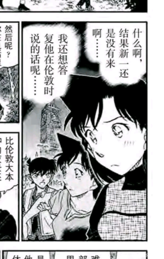
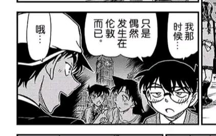
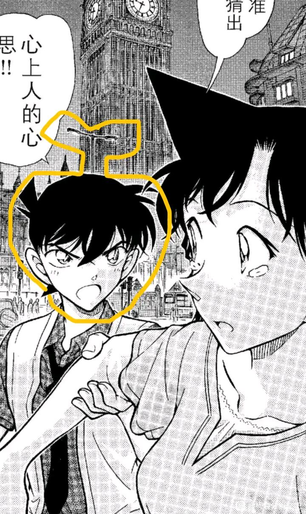
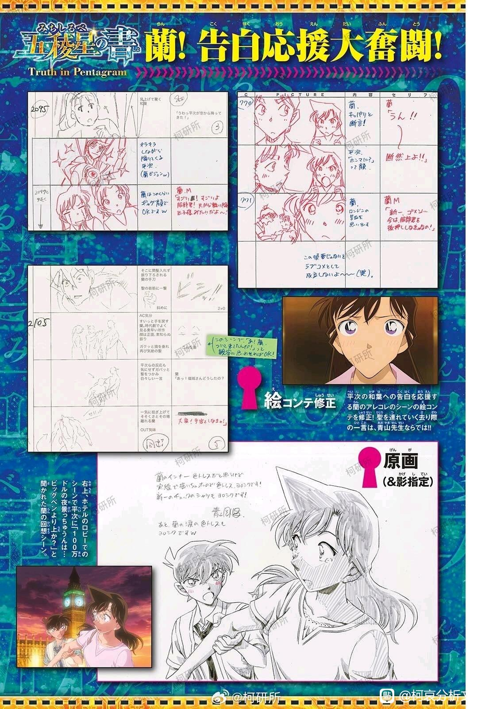
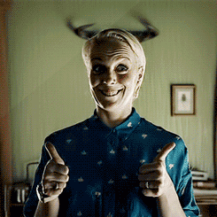

参考k大关于伦敦告白金苹果理论以及73常用的回忆错位理论，关于伦敦告白场景新一头上的金苹果叶。老粉拜吧-关于73动物之森里信息的分析
（原楼115楼左右）
本来半信半疑，重新看漫画sr两人对伦敦告白场景回忆。在mll回忆里，头顶路灯杆画的非常明显，两人都没有画脸红线。在新一回忆里能看到头顶路灯是没有的，但是两人都增加了脸红线，因为格子太小忽略作画细节的可能性不大。两人对伦敦告白的认知和回忆应该是相对错位的。
（原楼115楼左右）
本来半信半疑，重新看漫画sr两人对伦敦告白场景回忆。在mll回忆里，头顶路灯杆画的非常明显，两人都没有画脸红线。在新一回忆里能看到头顶路灯是没有的，但是两人都增加了脸红线，因为格子太小忽略作画细节的可能性不大。两人对伦敦告白的认知和回忆应该是相对错位的。



绝对是有意为之，这种用一个什么线或者杆子贯穿人物的头或者身体是电影镜头语言里很常用的做法，通常用在恐怖片或者悬疑片中，贯穿人物让观众潜意识里产生不适感，一般用来暗示该角色接下来要遭遇不幸或者这件正在讨论的事不会成功。
而电影的话还有极小可能存在无心之失，比如导演就是水平一般，就是对视听语言不在意，主角的身体后面就正巧出现了个杆子或者什么栏杆，但漫画绝对不可能，因为漫画连天空上的云朵形状都是设计出来的，人物头顶正中间出现了一个贯穿的线非常破坏构图。
而电影的话还有极小可能存在无心之失，比如导演就是水平一般，就是对视听语言不在意，主角的身体后面就正巧出现了个杆子或者什么栏杆，但漫画绝对不可能，因为漫画连天空上的云朵形状都是设计出来的，人物头顶正中间出现了一个贯穿的线非常破坏构图。
 细节呀，所以伦敦马拉松兰姐没有心动的感觉，新一反而会觉得这是在告白，以为对方会觉得心动。
细节呀，所以伦敦马拉松兰姐没有心动的感觉，新一反而会觉得这是在告白，以为对方会觉得心动。所以这次小兰的回忆中，新一头上有路灯吗？
2024-04-29 07:47 | 七瓶三花月邪:原画只提供大头，不提供场景，动画里也没有这个电线杆子我记得
mll看到新一頭上有竹蜻蜓
如果把伦敦告白原图视为客观视角，其实对比腮红线还挺微妙的。腮红线的含义在名柯内一般指害羞尴尬脸红，恋爱戏份里非常多用。客观视角来看只有新一对告白言论有轻微害羞，兰表情更多的是惊讶，但在新一回忆里两个人都非常脸红，那么小的格子要明确加腮红线应该是73刻意加画的，兰的回忆里新一完全没有脸红，体现她更明确的意识到所谓告白是被迫的。感觉这里明明可以用旧图直接贴上去，但是全部修改微小细节，可能真的是73刻意为之。感觉这个回忆错位类似樱花班回忆表情一样，不能归于作画问题，更想知道m27兰回忆里是什么状态了。
2024-04-20 08:24 | 贴吧用户_7PX2yAy:但我记得有大佬扒过 小柯脸加线不是心动，而是紧张，正常的脸红，比如面对步美的时候2024-04-20 23:04 | 灰兔子noname磊:回复 贴吧用户_7PX2yAy :这里的脸红感觉还是害羞+尴尬，主要是兰视角完全没脸红也挺微妙
一模一样的回忆的分别是没脸红和脸红，这也太细节了吧。
cy
亲吻错位 情感错位 回忆错位 错位和对比🆚真的算一大特色了
脸红这个真细节了，新一作为告白方本来就是脸红的，所以回忆里两个人都脸红了，所以在新一看来，这里应该确实算告白了，至少说这种话是很难为情的
兰当时没脸红，只是惊讶，所以回忆里两个人都没脸红，后来也觉得新一是逼迫的，根本没当真…
还是那句话，目前感觉剧里面所有人对兰都是有滤镜的，就看这个泡沫会不会，会怎样被戳破了…
兰当时没脸红，只是惊讶，所以回忆里两个人都没脸红，后来也觉得新一是逼迫的，根本没当真…
还是那句话，目前感觉剧里面所有人对兰都是有滤镜的，就看这个泡沫会不会，会怎样被戳破了…
永远能挖出新东西的伦敦篇
换个思路，
新一确实喜欢兰，也许没到非其不可或为之长远计的爱的程度，但长久相处后的亲近和年少的心动是有的，所以新一确实没有猜中兰的想法。
而兰并不喜欢新一，无论伦马现场她希望新一做什么，但并不是基于两情相悦的告白与回应。也许她更希望得到的是某次新一处于下位而向上的屈服、哀告、认错、道歉、悔过、求助甚至求饶。
先前认为小兰屡屡诱使新一按她的意愿行动，而避免自己主动。但也许从她的角度看，新一的主动依然是自上而下的、胸有成竹的、掌控局面的，而小兰想要的是某个新一走投无路彻底由她来全权决定的场景。
所以她说讨厌被新一救之类的是真的，对他的抱怨并不是抱怨他无所作为或带来麻烦，而是怨他太有做为、太无所不能了。
兰是不甘心的，但不是不甘心见不到新一，而是不甘心新一的来去、二人的远近全部由新一决定。
兰讨厌参与新一的推理，因为那依然意味着自己的屈从与依附。
兰会说出平和的告白场景更壮观，因为她确实每一次都希望新一输。
兰并不是把新一当成神，而是一直想要凭自己的力量把新一拉下神坛甚至踩在脚下。
如果兰是魔鬼，则并不是因爱而成魔，恰恰相反，是在行魔道的过程中恰好利用了一段爱意。
对比红子，她对快斗的感情出自红魔法的失效，因而想要征服这个人，本质是在搞事业，魔术师快斗的真正对头不是警方，而是魔法师。
兰想要征服新一，也是因为她的魔鬼之法对新一失效了。
所以新一真正让兰动心的并不是高高在上为神的时刻，而是满面泪水无能为力的样子。
新一确实喜欢兰，也许没到非其不可或为之长远计的爱的程度，但长久相处后的亲近和年少的心动是有的，所以新一确实没有猜中兰的想法。
而兰并不喜欢新一，无论伦马现场她希望新一做什么，但并不是基于两情相悦的告白与回应。也许她更希望得到的是某次新一处于下位而向上的屈服、哀告、认错、道歉、悔过、求助甚至求饶。
先前认为小兰屡屡诱使新一按她的意愿行动，而避免自己主动。但也许从她的角度看，新一的主动依然是自上而下的、胸有成竹的、掌控局面的，而小兰想要的是某个新一走投无路彻底由她来全权决定的场景。
所以她说讨厌被新一救之类的是真的，对他的抱怨并不是抱怨他无所作为或带来麻烦，而是怨他太有做为、太无所不能了。
兰是不甘心的，但不是不甘心见不到新一，而是不甘心新一的来去、二人的远近全部由新一决定。
兰讨厌参与新一的推理，因为那依然意味着自己的屈从与依附。
兰会说出平和的告白场景更壮观，因为她确实每一次都希望新一输。
兰并不是把新一当成神，而是一直想要凭自己的力量把新一拉下神坛甚至踩在脚下。
如果兰是魔鬼，则并不是因爱而成魔，恰恰相反，是在行魔道的过程中恰好利用了一段爱意。
对比红子，她对快斗的感情出自红魔法的失效，因而想要征服这个人，本质是在搞事业，魔术师快斗的真正对头不是警方，而是魔法师。
兰想要征服新一，也是因为她的魔鬼之法对新一失效了。
所以新一真正让兰动心的并不是高高在上为神的时刻，而是满面泪水无能为力的样子。
2024-04-15 06:33 | 贴吧用户_QU2KPRP:也许小兰对伦马的回应本来应该是拒绝？而修学时由外界所致变成了含糊的答应，当众拒绝只会被认为害羞，她需要一个能够确实打击到新一的场景。2024-04-15 06:36 | 灰兔子noname磊:这个问题其实涉及到我对毛利兰最雷的一个点，面对失去记忆柔弱无能的工藤新一（屋田诚人）的反应，跑去森林里求死罗神把新一还回来。对比平次的态度，很难说毛利兰爱的到底是青梅竹马的工藤新一，还是一个别人眼里无所不能又对她言听计从的彰显她自己美好品质的装饰品而已。2024-04-15 06:36 | 贴吧用户_QU2KPRP:她当众责怪新一与小偷合作，是想让新一丢脸，只是白马探出面维护了侦探的尊严。白马代表侦探与魔鬼战斗，而不只是评论不相配的恋爱。2024-04-15 06:44 | 贴吧用户_QU2KPRP:回复 灰兔子noname磊 :我最后说的不对，应该是兰什么样的新一也不喜欢，但是对别人无所不能的新一只在她面前垮掉这件事能让她爽到。
真正的画面应该是一个脸红一个没脸红。对方都认为自己的表情对方也有。而且在小兰的视角里面，新一真的是个苹果。
很有道理
握草
伦敦篇真是万物起源
原帖是哪个
更新个佐证材料，m27原画目前看来是按一个脸红一个不脸红画的，也没有叶子，有看完的老师们说一下的确是这样吗？

2024-04-22 05:21 | 世界上没有真理:倫敦背景跟紅修一樣也是暗紅色的黃昏.....2024-04-22 06:07 | 灰兔子noname磊:回复 世界上没有真理 :说起来这个，我突然注意到！！！漫画原画是有能看到时间的，九点34左右，首楼图就有！！！正常天气的话这个时间伦敦不会是这个天色吧2024-04-22 06:09 | 灰兔子noname磊:回复 世界上没有真理 :仔细看这次原画背后的钟也是这个时间，2024-04-22 07:16 | 世界上没有真理:回复 灰兔子noname磊 :夏令倫敦日落時間大概八九點，所以那個天色是有可能的2024-04-29 05:00 | 櫻井青城:左下这个图是电影里的吗？怎么说呢，背后的表盘好像两只眼睛在注视着一切啊，莫名有点吓人2024-04-29 08:12 | 世界上没有真理:回复 櫻井青城 :這圖配上背景顏色整個超不吉利的
重看南英大佬的红修篇，发现兰跟和叶提伦敦的时候，回忆里是两个人都有脸红，视频时间21：50。
同理想起来玛丽头上的角
机位有意为之告诉观众玛丽的身份
机位有意为之告诉观众玛丽的身份

2024-05-03 07:04 | 林夕劫掠队长💕:捏麻麻的下次找图找清一点的，这个鬼分辨率大晚上看到真的被吓一哆嗦2024-05-03 15:31 | 贴吧用户_GQ6b6ZX:我服了，大半夜吓一跳


楼主的图一里小兰的回忆里时间是比图二柯南的回忆和图三快了五分钟的。不知道有没有什么含义。
但是柯南的回忆没有电线杆欸